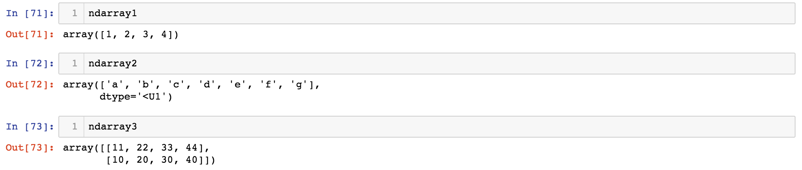
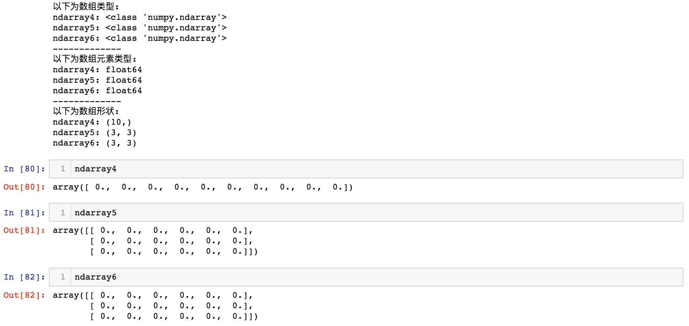
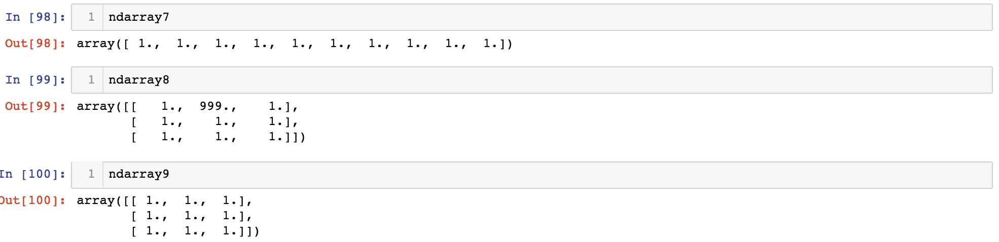
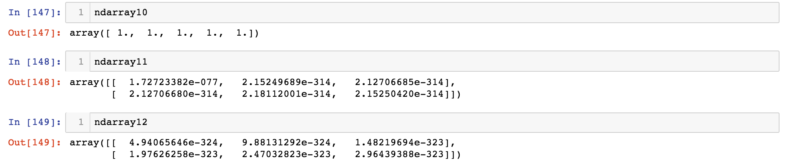
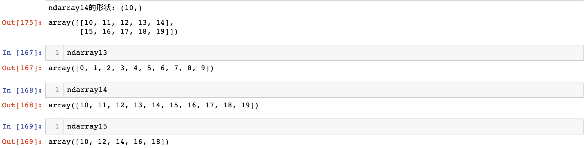
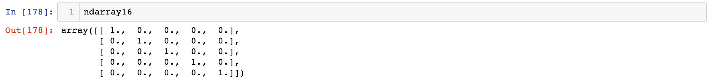

<!DOCTYPE HTML>
<html lang="en" >
    
    <head>
        
        <meta charset="UTF-8">
        <meta http-equiv="X-UA-Compatible" content="IE=edge" />
        <title>创建数组 | Linkedln：2016年中国互联网最热职位人才库报告</title>
        <meta content="text/html; charset=utf-8" http-equiv="Content-Type">
        <meta name="description" content="">
        <meta name="generator" content="GitBook 2.6.7">
        
        
        <meta name="HandheldFriendly" content="true"/>
        <meta name="viewport" content="width=device-width, initial-scale=1, user-scalable=no">
        <meta name="apple-mobile-web-app-capable" content="yes">
        <meta name="apple-mobile-web-app-status-bar-style" content="black">
        <link rel="apple-touch-icon-precomposed" sizes="152x152" href="../gitbook/images/apple-touch-icon-precomposed-152.png">
        <link rel="shortcut icon" href="../gitbook/images/favicon.ico" type="image/x-icon">
        
    <link rel="stylesheet" href="../gitbook/style.css">
    
        
        <link rel="stylesheet" href="../gitbook/plugins/gitbook-plugin-highlight/website.css">
        
    
        
        <link rel="stylesheet" href="../gitbook/plugins/gitbook-plugin-search/search.css">
        
    
        
        <link rel="stylesheet" href="../gitbook/plugins/gitbook-plugin-fontsettings/website.css">
        
    
    

        
    
    
    <link rel="next" href="../part02/2.2_数据类型.html" />
    
    
    <link rel="prev" href="../part02/2_Numpy.html" />
    

        
    </head>
    <body>
        
        
    <div class="book"
        data-level="2.1"
        data-chapter-title="创建数组"
        data-filepath="part02/2.1_创建数组.md"
        data-basepath=".."
        data-revision="Thu Dec 14 2017 23:24:20 GMT+0800 (CST)"
        data-innerlanguage="">
    

<div class="book-summary">
    <nav role="navigation">
        <ul class="summary">
            
            
            
            

            

            
    
        <li class="chapter " data-level="0" data-path="index.html">
            
                
                    <a href="../index.html">
                
                        <i class="fa fa-check"></i>
                        
                        数据分析
                    </a>
            
            
        </li>
    
        <li class="chapter " data-level="1" data-path="part01/1_数据分析概述.html">
            
                
                    <a href="../part01/1_数据分析概述.html">
                
                        <i class="fa fa-check"></i>
                        
                            <b>1.</b>
                        
                        数据分析概述
                    </a>
            
            
            <ul class="articles">
                
    
        <li class="chapter " data-level="1.1" data-path="part01/1.1_Python数据分析.html">
            
                
                    <a href="../part01/1.1_Python数据分析.html">
                
                        <i class="fa fa-check"></i>
                        
                            <b>1.1.</b>
                        
                        Python数据分析
                    </a>
            
            
        </li>
    
        <li class="chapter " data-level="1.2" data-path="part01/1.2_jupyper_notebook.html">
            
                
                    <a href="../part01/1.2_jupyper_notebook.html">
                
                        <i class="fa fa-check"></i>
                        
                            <b>1.2.</b>
                        
                        jupyter notebook
                    </a>
            
            
        </li>
    

            </ul>
            
        </li>
    
        <li class="chapter " data-level="2" data-path="part02/2_Numpy.html">
            
                
                    <a href="../part02/2_Numpy.html">
                
                        <i class="fa fa-check"></i>
                        
                            <b>2.</b>
                        
                        Numpy
                    </a>
            
            
            <ul class="articles">
                
    
        <li class="chapter active" data-level="2.1" data-path="part02/2.1_创建数组.html">
            
                
                    <a href="../part02/2.1_创建数组.html">
                
                        <i class="fa fa-check"></i>
                        
                            <b>2.1.</b>
                        
                        创建数组
                    </a>
            
            
        </li>
    
        <li class="chapter " data-level="2.2" data-path="part02/2.2_数据类型.html">
            
                
                    <a href="../part02/2.2_数据类型.html">
                
                        <i class="fa fa-check"></i>
                        
                            <b>2.2.</b>
                        
                        数据类型
                    </a>
            
            
        </li>
    
        <li class="chapter " data-level="2.3" data-path="part02/2.3_数组运算.html">
            
                
                    <a href="../part02/2.3_数组运算.html">
                
                        <i class="fa fa-check"></i>
                        
                            <b>2.3.</b>
                        
                        数组运算
                    </a>
            
            
        </li>
    
        <li class="chapter " data-level="2.4" data-path="part02/2.4_数组索引和切片.html">
            
                
                    <a href="../part02/2.4_数组索引和切片.html">
                
                        <i class="fa fa-check"></i>
                        
                            <b>2.4.</b>
                        
                        数组索引和切片
                    </a>
            
            
        </li>
    
        <li class="chapter " data-level="2.5" data-path="part02/2.5_数组函数.html">
            
                
                    <a href="../part02/2.5_数组函数.html">
                
                        <i class="fa fa-check"></i>
                        
                            <b>2.5.</b>
                        
                        数组函数
                    </a>
            
            
            <ul class="articles">
                
    
        <li class="chapter " data-level="2.5.1" data-path="part02/2.5.1_通用元素级数组函数.html">
            
                
                    <a href="../part02/2.5.1_通用元素级数组函数.html">
                
                        <i class="fa fa-check"></i>
                        
                            <b>2.5.1.</b>
                        
                        通用元素级数组函数
                    </a>
            
            
        </li>
    
        <li class="chapter " data-level="2.5.2" data-path="part02/2.5.2_数组统计函数.html">
            
                
                    <a href="../part02/2.5.2_数组统计函数.html">
                
                        <i class="fa fa-check"></i>
                        
                            <b>2.5.2.</b>
                        
                        数组统计函数
                    </a>
            
            
        </li>
    
        <li class="chapter " data-level="2.5.3" data-path="part02/2.5.3_all和any函数.html">
            
                
                    <a href="../part02/2.5.3_all和any函数.html">
                
                        <i class="fa fa-check"></i>
                        
                            <b>2.5.3.</b>
                        
                        all和any函数
                    </a>
            
            
        </li>
    
        <li class="chapter " data-level="2.5.4" data-path="part02/2.5.4_添加和删除函数.html">
            
                
                    <a href="../part02/2.5.4_添加和删除函数.html">
                
                        <i class="fa fa-check"></i>
                        
                            <b>2.5.4.</b>
                        
                        添加和删除函数
                    </a>
            
            
        </li>
    
        <li class="chapter " data-level="2.5.5" data-path="part02/2.5.5_唯一化和集合函数.html">
            
                
                    <a href="../part02/2.5.5_唯一化和集合函数.html">
                
                        <i class="fa fa-check"></i>
                        
                            <b>2.5.5.</b>
                        
                        唯一化和集合函数
                    </a>
            
            
        </li>
    
        <li class="chapter " data-level="2.5.6" data-path="part02/2.5.6_随机数生成函数.html">
            
                
                    <a href="../part02/2.5.6_随机数生成函数.html">
                
                        <i class="fa fa-check"></i>
                        
                            <b>2.5.6.</b>
                        
                        随机数生成函数
                    </a>
            
            
        </li>
    
        <li class="chapter " data-level="2.5.7" data-path="part02/2.5.7_数组排序函数.html">
            
                
                    <a href="../part02/2.5.7_数组排序函数.html">
                
                        <i class="fa fa-check"></i>
                        
                            <b>2.5.7.</b>
                        
                        数组排序函数
                    </a>
            
            
        </li>
    

            </ul>
            
        </li>
    
        <li class="chapter " data-level="2.6" data-path="part02/2.6_数组文件输入输出.html">
            
                
                    <a href="../part02/2.6_数组文件输入输出.html">
                
                        <i class="fa fa-check"></i>
                        
                            <b>2.6.</b>
                        
                        数组文件输入输出
                    </a>
            
            
            <ul class="articles">
                
    
        <li class="chapter " data-level="2.6.1" data-path="part02/2.6.1_数组输入和输出.html">
            
                
                    <a href="../part02/2.6.1_数组输入和输出.html">
                
                        <i class="fa fa-check"></i>
                        
                            <b>2.6.1.</b>
                        
                        数组输入和输出
                    </a>
            
            
        </li>
    
        <li class="chapter " data-level="2.6.2" data-path="part02/2.6.2_读写文本文件.html">
            
                
                    <a href="../part02/2.6.2_读写文本文件.html">
                
                        <i class="fa fa-check"></i>
                        
                            <b>2.6.2.</b>
                        
                        读写文本文件
                    </a>
            
            
        </li>
    

            </ul>
            
        </li>
    
        <li class="chapter " data-level="2.7" data-path="part02/2.7_案例_亚洲国家人口数据计算.html">
            
                
                    <a href="../part02/2.7_案例_亚洲国家人口数据计算.html">
                
                        <i class="fa fa-check"></i>
                        
                            <b>2.7.</b>
                        
                        案例_亚洲国家人口数据
                    </a>
            
            
        </li>
    

            </ul>
            
        </li>
    
        <li class="chapter " data-level="3" data-path="part03/3_Pandas.html">
            
                
                    <a href="../part03/3_Pandas.html">
                
                        <i class="fa fa-check"></i>
                        
                            <b>3.</b>
                        
                        Pandas
                    </a>
            
            
            <ul class="articles">
                
    
        <li class="chapter " data-level="3.1" data-path="part03/3.1_Series.html">
            
                
                    <a href="../part03/3.1_Series.html">
                
                        <i class="fa fa-check"></i>
                        
                            <b>3.1.</b>
                        
                        Series
                    </a>
            
            
            <ul class="articles">
                
    
        <li class="chapter " data-level="3.1.1" data-path="part03/3.1.1_Series创建.html">
            
                
                    <a href="../part03/3.1.1_Series创建.html">
                
                        <i class="fa fa-check"></i>
                        
                            <b>3.1.1.</b>
                        
                        Series创建
                    </a>
            
            
        </li>
    
        <li class="chapter " data-level="3.1.2" data-path="part03/3.1.2_Series操作.html">
            
                
                    <a href="../part03/3.1.2_Series操作.html">
                
                        <i class="fa fa-check"></i>
                        
                            <b>3.1.2.</b>
                        
                        Series操作
                    </a>
            
            
        </li>
    
        <li class="chapter " data-level="3.1.3" data-path="part03/3.1.3_了解NaN.html">
            
                
                    <a href="../part03/3.1.3_了解NaN.html">
                
                        <i class="fa fa-check"></i>
                        
                            <b>3.1.3.</b>
                        
                        了解NaN
                    </a>
            
            
        </li>
    

            </ul>
            
        </li>
    
        <li class="chapter " data-level="3.2" data-path="part03/3.2_DataFrame.html">
            
                
                    <a href="../part03/3.2_DataFrame.html">
                
                        <i class="fa fa-check"></i>
                        
                            <b>3.2.</b>
                        
                        DataFrame
                    </a>
            
            
            <ul class="articles">
                
    
        <li class="chapter " data-level="3.2.1" data-path="part03/3.2.1_DataFrame创建.html">
            
                
                    <a href="../part03/3.2.1_DataFrame创建.html">
                
                        <i class="fa fa-check"></i>
                        
                            <b>3.2.1.</b>
                        
                        创建对象
                    </a>
            
            
        </li>
    
        <li class="chapter " data-level="3.2.2" data-path="part03/3.2.2_DataFrame操作.html">
            
                
                    <a href="../part03/3.2.2_DataFrame操作.html">
                
                        <i class="fa fa-check"></i>
                        
                            <b>3.2.2.</b>
                        
                        数据操作
                    </a>
            
            
        </li>
    
        <li class="chapter " data-level="3.2.3" data-path="part03/3.2.3_算数运算和数据对齐.html">
            
                
                    <a href="../part03/3.2.3_算数运算和数据对齐.html">
                
                        <i class="fa fa-check"></i>
                        
                            <b>3.2.3.</b>
                        
                        算数运算和数据对齐
                    </a>
            
            
        </li>
    
        <li class="chapter " data-level="3.2.4" data-path="part03/3.2.4_函数应用-apply函数.html">
            
                
                    <a href="../part03/3.2.4_函数应用-apply函数.html">
                
                        <i class="fa fa-check"></i>
                        
                            <b>3.2.4.</b>
                        
                        函数应用和映射了解NaN
                    </a>
            
            
        </li>
    
        <li class="chapter " data-level="3.2.5" data-path="part03/3.2.5_Pandas排序.html">
            
                
                    <a href="../part03/3.2.5_Pandas排序.html">
                
                        <i class="fa fa-check"></i>
                        
                            <b>3.2.5.</b>
                        
                        Pandas排序
                    </a>
            
            
        </li>
    
        <li class="chapter " data-level="3.2.6" data-path="part03/3.2.6_等级索引和分级.html">
            
                
                    <a href="../part03/3.2.6_等级索引和分级.html">
                
                        <i class="fa fa-check"></i>
                        
                            <b>3.2.6.</b>
                        
                        等级索引和分级
                    </a>
            
            
        </li>
    
        <li class="chapter " data-level="3.2.7" data-path="part03/3.2.7_处理缺失数据.html">
            
                
                    <a href="../part03/3.2.7_处理缺失数据.html">
                
                        <i class="fa fa-check"></i>
                        
                            <b>3.2.7.</b>
                        
                        处理缺失数据
                    </a>
            
            
        </li>
    

            </ul>
            
        </li>
    
        <li class="chapter " data-level="3.3" data-path="part03/3.3_数据准备.html">
            
                
                    <a href="../part03/3.3_数据准备.html">
                
                        <i class="fa fa-check"></i>
                        
                            <b>3.3.</b>
                        
                        数据准备
                    </a>
            
            
            <ul class="articles">
                
    
        <li class="chapter " data-level="3.3.1" data-path="part03/3.3.1_数据组装.html">
            
                
                    <a href="../part03/3.3.1_数据组装.html">
                
                        <i class="fa fa-check"></i>
                        
                            <b>3.3.1.</b>
                        
                        数据组装
                    </a>
            
            
        </li>
    
        <li class="chapter " data-level="3.3.2" data-path="part03/3.3.2_轴向旋转.html">
            
                
                    <a href="../part03/3.3.2_轴向旋转.html">
                
                        <i class="fa fa-check"></i>
                        
                            <b>3.3.2.</b>
                        
                        轴向旋转
                    </a>
            
            
        </li>
    

            </ul>
            
        </li>
    
        <li class="chapter " data-level="3.4" data-path="part03/3.4_数据转换.html">
            
                
                    <a href="../part03/3.4_数据转换.html">
                
                        <i class="fa fa-check"></i>
                        
                            <b>3.4.</b>
                        
                        数据转换
                    </a>
            
            
            <ul class="articles">
                
    
        <li class="chapter " data-level="3.4.1" data-path="part03/3.4.1_删除重复行.html">
            
                
                    <a href="../part03/3.4.1_删除重复行.html">
                
                        <i class="fa fa-check"></i>
                        
                            <b>3.4.1.</b>
                        
                        删除重复行列
                    </a>
            
            
        </li>
    
        <li class="chapter " data-level="3.4.2" data-path="part03/3.4.2_映射.html">
            
                
                    <a href="../part03/3.4.2_映射.html">
                
                        <i class="fa fa-check"></i>
                        
                            <b>3.4.2.</b>
                        
                        映射
                    </a>
            
            
        </li>
    
        <li class="chapter " data-level="3.4.3" data-path="part03/3.4.3_排序-take函数.html">
            
                
                    <a href="../part03/3.4.3_排序-take函数.html">
                
                        <i class="fa fa-check"></i>
                        
                            <b>3.4.3.</b>
                        
                        排序
                    </a>
            
            
        </li>
    

            </ul>
            
        </li>
    
        <li class="chapter " data-level="3.5" data-path="part03/3.5_数据聚合.html">
            
                
                    <a href="../part03/3.5_数据聚合.html">
                
                        <i class="fa fa-check"></i>
                        
                            <b>3.5.</b>
                        
                        数据聚合
                    </a>
            
            
            <ul class="articles">
                
    
        <li class="chapter " data-level="3.5.1" data-path="part03/3.5.1_分组-GroupBy.html">
            
                
                    <a href="../part03/3.5.1_分组-GroupBy.html">
                
                        <i class="fa fa-check"></i>
                        
                            <b>3.5.1.</b>
                        
                        分组(GroupBy)
                    </a>
            
            
        </li>
    
        <li class="chapter " data-level="3.5.2" data-path="part03/3.5.2_聚合-Aggregation.html">
            
                
                    <a href="../part03/3.5.2_聚合-Aggregation.html">
                
                        <i class="fa fa-check"></i>
                        
                            <b>3.5.2.</b>
                        
                        聚合(Aggregation)
                    </a>
            
            
        </li>
    

            </ul>
            
        </li>
    
        <li class="chapter " data-level="3.6" data-path="part03/3.6_数据读写.html">
            
                
                    <a href="../part03/3.6_数据读写.html">
                
                        <i class="fa fa-check"></i>
                        
                            <b>3.6.</b>
                        
                        数据读写
                    </a>
            
            
            <ul class="articles">
                
    
        <li class="chapter " data-level="3.6.1" data-path="part03/3.6.1_读写CSV文本数据.html">
            
                
                    <a href="../part03/3.6.1_读写CSV文本数据.html">
                
                        <i class="fa fa-check"></i>
                        
                            <b>3.6.1.</b>
                        
                        读写CSV文本数据
                    </a>
            
            
        </li>
    
        <li class="chapter " data-level="3.6.2" data-path="part03/3.6.2_读写HTML文本文件数据.html">
            
                
                    <a href="../part03/3.6.2_读写HTML文本文件数据.html">
                
                        <i class="fa fa-check"></i>
                        
                            <b>3.6.2.</b>
                        
                        读写HTML文本文件数据
                    </a>
            
            
        </li>
    
        <li class="chapter " data-level="3.6.3" data-path="part03/3.6.3_读写数据库数据.html">
            
                
                    <a href="../part03/3.6.3_读写数据库数据.html">
                
                        <i class="fa fa-check"></i>
                        
                            <b>3.6.3.</b>
                        
                        读写数据库数据
                    </a>
            
            
        </li>
    

            </ul>
            
        </li>
    

            </ul>
            
        </li>
    
        <li class="chapter " data-level="4" data-path="part04/4_Matplotlib.html">
            
                
                    <a href="../part04/4_Matplotlib.html">
                
                        <i class="fa fa-check"></i>
                        
                            <b>4.</b>
                        
                        Matplotlib
                    </a>
            
            
            <ul class="articles">
                
    
        <li class="chapter " data-level="4.1" data-path="part04/4.1_图表绘制.html">
            
                
                    <a href="../part04/4.1_图表绘制.html">
                
                        <i class="fa fa-check"></i>
                        
                            <b>4.1.</b>
                        
                        图标绘制
                    </a>
            
            
            <ul class="articles">
                
    
        <li class="chapter " data-level="4.1.1" data-path="part04/4.1.1_线性图和案例.html">
            
                
                    <a href="../part04/4.1.1_线性图和案例.html">
                
                        <i class="fa fa-check"></i>
                        
                            <b>4.1.1.</b>
                        
                        线性图和案例
                    </a>
            
            
        </li>
    
        <li class="chapter " data-level="4.1.2" data-path="part04/4.1.2_条状图和案例.html">
            
                
                    <a href="../part04/4.1.2_条状图和案例.html">
                
                        <i class="fa fa-check"></i>
                        
                            <b>4.1.2.</b>
                        
                        条状图和案例
                    </a>
            
            
        </li>
    
        <li class="chapter " data-level="4.1.3" data-path="part04/4.1.3_饼图和案例.html">
            
                
                    <a href="../part04/4.1.3_饼图和案例.html">
                
                        <i class="fa fa-check"></i>
                        
                            <b>4.1.3.</b>
                        
                        饼图和案例
                    </a>
            
            
        </li>
    

            </ul>
            
        </li>
    
        <li class="chapter " data-level="4.2" data-path="part04/4.2_绘制多个图像.html">
            
                
                    <a href="../part04/4.2_绘制多个图像.html">
                
                        <i class="fa fa-check"></i>
                        
                            <b>4.2.</b>
                        
                        绘制多个图像
                    </a>
            
            
        </li>
    

            </ul>
            
        </li>
    


            
            <li class="divider"></li>
            <li>
                <a href="https://www.gitbook.com" target="blank" class="gitbook-link">
                    Published with GitBook
                </a>
            </li>
            
        </ul>
    </nav>
</div>

    <div class="book-body">
        <div class="body-inner">
            <div class="book-header" role="navigation">
    <!-- Actions Left -->
    

    <!-- Title -->
    <h1>
        <i class="fa fa-circle-o-notch fa-spin"></i>
        <a href="../" >Linkedln：2016年中国互联网最热职位人才库报告</a>
    </h1>
</div>

            <div class="page-wrapper" tabindex="-1" role="main">
                <div class="page-inner">
                
                
                    <section class="normal" id="section-">
                    
                        <h2 id="21-&#x521B;&#x5EFA;&#x6570;&#x7EC4;">2.1 &#x521B;&#x5EFA;&#x6570;&#x7EC4;</h2>
<hr>
<h3 id="211-ndarray&#x6982;&#x8FF0;">2.1.1 ndarray&#x6982;&#x8FF0;</h3>
<p>Numpy&#x6700;&#x91CD;&#x8981;&#x7684;&#x4E00;&#x4E2A;&#x7279;&#x70B9;&#x5C31;&#x662F;&#x5176;N&#x7EAC;&#x6570;&#x7EC4;&#x5BF9;&#x8C61;(&#x5373;ndarray),&#x8BE5;&#x5BF9;&#x8C61;&#x662F;&#x4E00;&#x4E2A;&#x5FEB;&#x901F;&#x800C;&#x7075;&#x6D3B;&#x7684;&#x5927;&#x6570;&#x636E;&#x96C6;&#x5BB9;&#x5668;&#x3002;&#x4F60;&#x53EF;&#x4EE5;&#x5229;&#x7528;&#x8FD9;&#x79CD;&#x6570;&#x7EC4;&#x5BF9;&#x6574;&#x5757;&#x7684;&#x6570;&#x636E;&#x6267;&#x884C;&#x4E00;&#x4E9B;&#x6570;&#x5B66;&#x8FD0;&#x7B97;&#x3002;</p>
<p>ndarray&#x662F;&#x4E00;&#x4E2A;&#x901A;&#x7528;&#x7684;&#x540C;&#x6784;&#x6570;&#x636E;&#x591A;&#x7EF4;&#x5BB9;&#x5668;&#xFF0C;&#x5176;&#x4E2D;&#x7684;&#x6240;&#x6709;&#x5143;&#x7D20;&#x5FC5;&#x987B;&#x662F;&#x76F8;&#x540C;&#x7C7B;&#x578B;&#x7684;&#x3002;&#x6BCF;&#x4E2A;&#x6570;&#x7EC4;&#x90FD;&#x6709;&#x4E00;&#x4E2A;shape(&#x8868;&#x793A;&#x5404;&#x7EF4;&#x5EA6;&#x5927;&#x5C0F;&#x7684;&#x5143;&#x7EC4;)&#x548C;&#x4E00;&#x4E2A;dtype(&#x8868;&#x793A;&#x6570;&#x7EC4;&#x6570;&#x636E;&#x7C7B;&#x578B;&#x7684;&#x5BF9;&#x8C61;):</p>
<p>&#x6211;&#x4EEC;&#x5C06;&#x4F1A;&#x4ECB;&#x7ECD;Numpy&#x6570;&#x7EC4;&#x7684;&#x57FA;&#x672C;&#x7528;&#x6CD5;&#xFF0C;&#x867D;&#x7136;&#x8BF4;&#x5927;&#x591A;&#x6570;&#x6570;&#x636E;&#x5206;&#x6790;&#x5DE5;&#x4F5C;&#x4E0D;&#x9700;&#x8981;&#x6DF1;&#x5165;&#x7406;&#x89E3;Numpy&#xFF0C;&#x4F46;&#x7CBE;&#x901A;&#x9762;&#x5411;&#x6570;&#x7EC4;&#x7684;&#x7F16;&#x7A0B;&#x548C;&#x601D;&#x7EF4;&#x65B9;&#x5F0F;&#x662F;&#x6210;&#x4E3A;Python&#x79D1;&#x5B66;&#x8BA1;&#x7B97;&#x725B;&#x4EBA;&#x7684;&#x4E00;&#x5927;&#x5173;&#x952E;&#x6B65;&#x9AA4;&#x3002;</p>
<blockquote>
<p>&#x6CE8;&#x610F;: &#x6211;&#x4EEC;&#x5C06;&#x4F9D;&#x7167;&#x6807;&#x51C6;&#x7684;Numpy&#x7EA6;&#x5B9A;&#xFF0C;&#x5373;&#x603B;&#x662F;&#x4F7F;&#x7528;import numpy as np. &#x5F53;&#x7136;&#x4F60;&#x4E5F;&#x53EF;&#x4EE5;&#x4E3A;&#x4E86;&#x4E0D;&#x5199;np,&#x800C;&#x76F4;&#x63A5;&#x5728;&#x4EE3;&#x7801;&#x4E2D;&#x4F7F;&#x7528;from numpy import *, &#x4F46;&#x662F;&#x5EFA;&#x8BAE;&#x4F60;&#x6700;&#x597D;&#x8FD8;&#x662F;&#x4E0D;&#x8981;&#x517B;&#x6210;&#x8FD9;&#x6837;&#x7684;&#x574F;&#x4E60;&#x60EF;&#x3002;</p>
</blockquote>
<h3 id="212-&#x521B;&#x5EFA;ndarray">2.1.2 &#x521B;&#x5EFA;ndarray</h3>
<p>&#x521B;&#x5EFA;&#x6570;&#x7EC4;&#x6700;&#x7B80;&#x5355;&#x7684;&#x65B9;&#x6CD5;&#x5C31;&#x662F;&#x4F7F;&#x7528;array&#x51FD;&#x6570;&#x3002;&#x5B83;&#x63A5;&#x6536;&#x4E00;&#x5207;&#x5E8F;&#x5217;&#x578B;&#x7684;&#x5BF9;&#x8C61;&#xFF08;&#x5305;&#x62EC;&#x5176;&#x4ED6;&#x6570;&#x7EC4;&#xFF09;&#xFF0C;&#x7136;&#x540E;&#x4EA7;&#x751F;&#x4E00;&#x4E2A;&#x65B0;&#x7684;&#x542B;&#x6709;&#x4F20;&#x5165;&#x6570;&#x636E;&#x7684;Numpy&#x6570;&#x7EC4;&#x3002;</p>
<h4 id="1-array&#x51FD;&#x6570;&#x521B;&#x5EFA;&#x6570;&#x7EC4;">1. array&#x51FD;&#x6570;&#x521B;&#x5EFA;&#x6570;&#x7EC4;</h4>
<pre><code class="lang-python"><span class="hljs-keyword">import</span> numpy <span class="hljs-keyword">as</span> np

ndarray1 = np.array([<span class="hljs-number">1</span>, <span class="hljs-number">2</span>, <span class="hljs-number">3</span>, <span class="hljs-number">4</span>])
ndarray2 = np.array(list(<span class="hljs-string">&apos;abcdefg&apos;</span>))
ndarray3 = np.array([[<span class="hljs-number">11</span>, <span class="hljs-number">22</span>, <span class="hljs-number">33</span>, <span class="hljs-number">44</span>], [<span class="hljs-number">10</span>, <span class="hljs-number">20</span>, <span class="hljs-number">30</span>, <span class="hljs-number">40</span>]])
</code></pre>
<blockquote>
<p>&#x8F93;&#x51FA;&#x7ED3;&#x679C;:</p>
<p></p>
</blockquote>
<h4 id="2-zeros&#x548C;zeroslike&#x521B;&#x5EFA;&#x6570;&#x7EC4;">2. zeros&#x548C;zeros_like&#x521B;&#x5EFA;&#x6570;&#x7EC4;</h4>
<p>&#x7528;&#x4E8E;&#x521B;&#x5EFA;&#x6570;&#x7EC4;&#xFF0C;&#x6570;&#x7EC4;&#x5143;&#x7D20;&#x9ED8;&#x8BA4;&#x503C;&#x662F;0. &#x6CE8;&#x610F;:zeros_linke&#x51FD;&#x6570;&#x53EA;&#x662F;&#x6839;&#x636E;&#x4F20;&#x5165;&#x7684;ndarray&#x6570;&#x7EC4;&#x7684;shape&#x6765;&#x521B;&#x5EFA;&#x6240;&#x6709;&#x5143;&#x7D20;&#x4E3A;0&#x7684;&#x6570;&#x7EC4;&#xFF0C;&#x5E76;&#x4E0D;&#x662F;&#x62F7;&#x8D1D;&#x6E90;&#x6570;&#x7EC4;&#x4E2D;&#x7684;&#x6570;&#x636E;.</p>
<pre><code>ndarray4 = np.zeros(10)
ndarray5 = np.zeros((3, 3))
ndarray6 = np.zeros_like(ndarray5)  # &#x6309;&#x7167; ndarray5 &#x7684;shape&#x521B;&#x5EFA;&#x6570;&#x7EC4;
# &#x6253;&#x5370;&#x6570;&#x7EC4;&#x5143;&#x7D20;&#x7C7B;&#x578B;
print(&quot;&#x4EE5;&#x4E0B;&#x4E3A;&#x6570;&#x7EC4;&#x7C7B;&#x578B;:&quot;)
print(&apos;ndarray4:&apos;, type(ndarray4))
print(&apos;ndarray5:&apos;, type(ndarray5))
print(&apos;ndarray6:&apos;, type(ndarray6))
print(&quot;-------------&quot;)
print(&quot;&#x4EE5;&#x4E0B;&#x4E3A;&#x6570;&#x7EC4;&#x5143;&#x7D20;&#x7C7B;&#x578B;:&quot;)
print(&apos;ndarray4:&apos;, ndarray4.dtype)
print(&apos;ndarray5:&apos;, ndarray5.dtype)
print(&apos;ndarray6:&apos;, ndarray6.dtype)
print(&quot;-------------&quot;)
print(&quot;&#x4EE5;&#x4E0B;&#x4E3A;&#x6570;&#x7EC4;&#x5F62;&#x72B6;:&quot;)
print(&apos;ndarray4:&apos;, ndarray4.shape)
print(&apos;ndarray5:&apos;, ndarray5.shape)
print(&apos;ndarray6:&apos;, ndarray6.shape)
</code></pre><blockquote>
<p>&#x8F93;&#x51FA;&#x7ED3;&#x679C;:</p>
<p></p>
</blockquote>
<h4 id="3-ones&#x548C;oneslike&#x521B;&#x5EFA;&#x6570;&#x7EC4;">3. ones&#x548C;ones_like&#x521B;&#x5EFA;&#x6570;&#x7EC4;</h4>
<p>&#x7528;&#x4E8E;&#x521B;&#x5EFA;&#x6240;&#x6709;&#x5143;&#x7D20;&#x90FD;&#x4E3A;1&#x7684;&#x6570;&#x7EC4;.ones_like&#x7528;&#x6CD5;&#x540C;zeros_like&#x7528;&#x6CD5;.</p>
<pre><code class="lang-python"><span class="hljs-comment"># &#x521B;&#x5EFA;&#x6570;&#x7EC4;&#xFF0C;&#x5143;&#x7D20;&#x9ED8;&#x8BA4;&#x503C;&#x662F;0</span>
ndarray7 = np.ones(<span class="hljs-number">10</span>)
ndarray8 = np.ones((<span class="hljs-number">3</span>, <span class="hljs-number">3</span>))
<span class="hljs-comment"># &#x4FEE;&#x6539;&#x5143;&#x7D20;&#x7684;&#x503C;</span>
ndarray8[<span class="hljs-number">0</span>][<span class="hljs-number">1</span>] = <span class="hljs-number">999</span>
ndarray9 = np.ones_like(ndarray5)  <span class="hljs-comment"># &#x6309;&#x7167; ndarray5 &#x7684;shape&#x521B;&#x5EFA;&#x6570;&#x7EC4;</span>
</code></pre>
<blockquote>
<p>&#x8F93;&#x51FA;&#x7ED3;&#x679C;:</p>
<p></p>
</blockquote>
<h4 id="4-empty&#x548C;emptylike&#x521B;&#x5EFA;&#x6570;&#x7EC4;">4. empty&#x548C;empty_like&#x521B;&#x5EFA;&#x6570;&#x7EC4;</h4>
<p>&#x7528;&#x4E8E;&#x521B;&#x5EFA;&#x7A7A;&#x6570;&#x7EC4;&#xFF0C;&#x7A7A;&#x6570;&#x636E;&#x4E2D;&#x7684;&#x503C;&#x5E76;&#x4E0D;&#x4E3A;0,&#x800C;&#x662F;&#x672A;&#x521D;&#x59CB;&#x5316;&#x7684;&#x968F;&#x673A;&#x503C;.</p>
<pre><code class="lang-python">ndarray10 = np.empty(<span class="hljs-number">5</span>)
ndarray11 = np.empty((<span class="hljs-number">2</span>, <span class="hljs-number">3</span>))
ndarray12 = np.empty_like(ndarray11)
</code></pre>
<blockquote>
<p>&#x8F93;&#x51FA;&#x7ED3;&#x679C;:</p>
<p></p>
</blockquote>
<h4 id="5-arange&#x521B;&#x5EFA;&#x6570;&#x7EC4;">5. arange&#x521B;&#x5EFA;&#x6570;&#x7EC4;</h4>
<p>arange&#x51FD;&#x6570;&#x662F;python&#x5185;&#x7F6E;&#x51FD;&#x6570;range&#x51FD;&#x6570;&#x7684;&#x6570;&#x7EC4;&#x7248;&#x672C;.</p>
<pre><code class="lang-python"><span class="hljs-comment"># &#x4EA7;&#x751F;0-9&#x5171;10&#x4E2A;&#x5143;&#x7D20;</span>
ndarray13 = np.arange(<span class="hljs-number">10</span>)
<span class="hljs-comment"># &#x4EA7;&#x751F;&#x4ECE;10-19&#x5171;10&#x4E2A;&#x5143;&#x7D20;</span>
ndarray14 = np.arange(<span class="hljs-number">10</span>, <span class="hljs-number">20</span>)
<span class="hljs-comment"># &#x4EA7;&#x751F;10 12 14 16 18, 2&#x4E3A;step</span>
ndarray15 = np.arange(<span class="hljs-number">10</span>, <span class="hljs-number">20</span>, <span class="hljs-number">2</span>)
<span class="hljs-comment"># ndarray15&#x7684;&#x5F62;&#x72B6;</span>
print(<span class="hljs-string">&apos;ndarray14&#x7684;&#x5F62;&#x72B6;:&apos;</span>, ndarray14.shape)
<span class="hljs-comment"># &#x5C06;&#x5176;&#x5F62;&#x72B6;&#x6539;&#x53D8;&#x4E3A;(2, 5)</span>
ndarray14.reshape((<span class="hljs-number">2</span>, <span class="hljs-number">5</span>))
</code></pre>
<blockquote>
<p>&#x8F93;&#x51FA;&#x7ED3;&#x679C;:</p>
<p></p>
</blockquote>
<h4 id="6-eys&#x521B;&#x5EFA;&#x5BF9;&#x89D2;&#x77E9;&#x9635;&#x6570;&#x7EC4;">6. eys&#x521B;&#x5EFA;&#x5BF9;&#x89D2;&#x77E9;&#x9635;&#x6570;&#x7EC4;</h4>
<p>&#x8BE5;&#x51FD;&#x6570;&#x7528;&#x4E8E;&#x521B;&#x5EFA;&#x4E00;&#x4E2A;N*N&#x7684;&#x77E9;&#x9635;&#xFF0C;&#x5BF9;&#x89D2;&#x7EBF;&#x4E3A;1&#xFF0C;&#x5176;&#x4F59;&#x4E3A;0.</p>
<pre><code class="lang-python">ndarray16 = np.eye(<span class="hljs-number">5</span>)
</code></pre>
<blockquote>
<p>&#x8F93;&#x51FA;&#x7ED3;&#x679C;:</p>
<p></p>
</blockquote>

                    
                    </section>
                
                
                </div>
            </div>
        </div>

        
        <a href="../part02/2_Numpy.html" class="navigation navigation-prev " aria-label="Previous page: Numpy"><i class="fa fa-angle-left"></i></a>
        
        
        <a href="../part02/2.2_数据类型.html" class="navigation navigation-next " aria-label="Next page: 数据类型"><i class="fa fa-angle-right"></i></a>
        
    </div>
</div>

        
<script src="../gitbook/app.js"></script>

    
    <script src="../gitbook/plugins/gitbook-plugin-search/lunr.min.js"></script>
    

    
    <script src="../gitbook/plugins/gitbook-plugin-search/search.js"></script>
    

    
    <script src="../gitbook/plugins/gitbook-plugin-sharing/buttons.js"></script>
    

    
    <script src="../gitbook/plugins/gitbook-plugin-fontsettings/buttons.js"></script>
    

<script>
require(["gitbook"], function(gitbook) {
    var config = {"highlight":{},"search":{"maxIndexSize":1000000},"sharing":{"facebook":true,"twitter":true,"google":false,"weibo":false,"instapaper":false,"vk":false,"all":["facebook","google","twitter","weibo","instapaper"]},"fontsettings":{"theme":"white","family":"sans","size":2}};
    gitbook.start(config);
});
</script>

        
    </body>
    
</html>
